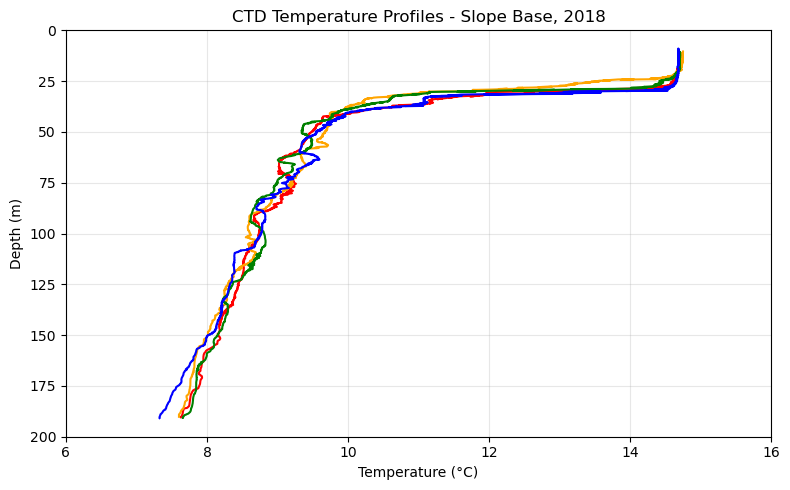

Shallow Profiler#
Build commands#
cd ~/argosyjupyter-book build .ghp-import -n -p -f _build/html
This project near-term goal is described in ~/argosy/ooiproject.md
Re-engaging after a time gap: Here are meta-tasks to help organize / present this material
The
~/argosy/AIPrompt.mdfile is the definitive summary/narrativeOpen 2 or 3 Ubuntu
bashshells including 1 to start Jupyter labOpen VS Code with the CA enabled
The CA is directed to write either cell code (Jupyter) or standalone
The standalone is a different Python distribution so installs are via
pipin PowerShell
Establish that the CA can see the WSL file system e.g. by means of the
wslutility command in PowerShellDevelop a presentation deck, link to that
Reconcile
argosy,epipelargosy,oceanographyand any other relevant GitHub reposReconcile both Dev machines
For WSL work:
activateappropriate Python environmentsMount the S3 bucket as a local file folder using the alias from
.bash_aliases
from math import cos, pi
def OceanScienceCalculation():
'''
The following is an estimate of DOC in the ocean.
DOC Dissolved organic carbon in the ocean is ~1000 GTons. Inorganic carbon: 38,000 GTons.
Near the ocean surface: 100 - 500 micromoles of carbon per kg seawater. The concentration
decreases with depth so for the entire water column we can use an attenuation factor
of (1/7.5).
'''
radius_earth_meters = 6378000
pi = 3.141592654
ocean_percent = 71
ocean_mean_depth_meters = 3700
water_kg_per_m3 = 1000
ocean_volume_m3 = 4. * pi * radius_earth_meters**2 * (ocean_percent / 100.) * ocean_mean_depth_meters
GTons_per_kg = 1e-12
ocean_mass_kg = ocean_volume_m3 * water_kg_per_m3
ocean_mass_GTons = ocean_mass_kg * GTons_per_kg
carbon_surface_um_per_kg = 300
micromoles_per_mole = 1e6
moles_per_micromole = 1/micromoles_per_mole
depth_attenuation = 1/7.5
carbon_moles_per_kg = carbon_surface_um_per_kg * moles_per_micromole * depth_attenuation
carbon_gm_per_mole = 12
gm_per_kg = 1000
kg_per_gm = 1 / gm_per_kg
carbon_kg_per_kg = carbon_moles_per_kg * carbon_gm_per_mole * kg_per_gm
carbon_in_the_ocean_kg = ocean_mass_kg * carbon_kg_per_kg
carbon_in_ocean_GTons = GTons_per_kg * carbon_in_the_ocean_kg
print("Mass of earth's oceans:", '{:0.2e}'.format(ocean_mass_GTons), 'GTons')
print("Organic carbon (kg) dissolved per kg of seawater:", round(carbon_kg_per_kg, 12))
print("Dissolved organic carbon mass, earth's oceans:", round(carbon_in_ocean_GTons, 1), 'GTons')
print()
# The Oregon coast has a longitude of approximately 124 degrees west
# The three shallow profiler sites are located some distance further west.
def OffshoreDistanceFromNewportOregon(lon):
'''
Regional Cabled Array (RCA)-specific calculation. Returns the distance (km)
of some site by longitude relative to Newport on the Oregon coast. The
hardcoded reference location is 44.6 deg north, -124 deg west.
'''
ref_lat, ref_lon = 44.6*pi/180, -124*pi/180
re = 6378. # earth radius, kilometers
return abs(lon*pi/180 - ref_lon)*cos(ref_lat)*re
Goals, constraints#
Goal: Characterize the upper 200 meters of the water column (the photic / epipelagic zone) nine times per day at three sites: sensors described below. Observing interval is 2015 to present.
The scope of this data analysis procedure is constrained by…
…shallow profiler data only; no platform data and no data from other RCA sites
…ascent only: Optimize undisturbed water
Exception: Some sensors only operate on descent (pCO2; nitrate is ascent I believe)
…three RCA shallow profiler sites (with abbreviations)
Slope base (sb): Base of the continental shelf
Oregon offshore (oo): On the continental shelf
Axial base (ab): At Axial seamount
…full-resolution datasets as source
Data supplied by OOINET
Resampling strategies as described below
…dual dimension strategy: time dimension for profiles, depth dimension for an individual profile
Ascent and descent interval metadata is available from GitHub.
- Wendi Ruef (RCA): https://github.com/OOI-CabledArray/profileIndices
OOI data access#
See Reserve notebook
Sensor types#
Shallow profiler “science pod”#
CTD
3 Wavelength Fluorometer
Dissolved Oxygen
Nitrate
Photosynthetically Available Radiation
Seawater pH
Single Point Velocity Meter
Spectral Irradiance
Spectrophotometer
pCO2 Water
Profiler Platform (200m)#
These sensors are not the immediate concern.
2-Wavelength Fluorometer
5-Beam Velocity Profiler (500kHz)
5-Beam Velocity Profiler (600kHz)
Broadband Acoustic Receiver (Hydrophone)
CTD
Digital Still Camera
Dissolved Oxygen
Seawater pH
Velocity Profiler (150kHz)
import xarray as xr
ds = xr.open_dataset('~/argosy/tmpdata/parexample.nc')
ds
---------------------------------------------------------------------------
KeyError Traceback (most recent call last)
File ~/miniconda3/envs/argo-env2/lib/python3.11/site-packages/xarray/backends/file_manager.py:211, in CachingFileManager._acquire_with_cache_info(self, needs_lock)
210 try:
--> 211 file = self._cache[self._key]
212 except KeyError:
File ~/miniconda3/envs/argo-env2/lib/python3.11/site-packages/xarray/backends/lru_cache.py:56, in LRUCache.__getitem__(self, key)
55 with self._lock:
---> 56 value = self._cache[key]
57 self._cache.move_to_end(key)
KeyError: [<class 'netCDF4._netCDF4.Dataset'>, ('/home/rob/argosy/tmpdata/parexample.nc',), 'r', (('clobber', True), ('diskless', False), ('format', 'NETCDF4'), ('persist', False)), '3d64ca20-0785-418f-92f6-c334a72610c6']
During handling of the above exception, another exception occurred:
FileNotFoundError Traceback (most recent call last)
Cell In[3], line 1
----> 1 ds = xr.open_dataset('~/argosy/tmpdata/parexample.nc')
2 ds
File ~/miniconda3/envs/argo-env2/lib/python3.11/site-packages/xarray/backends/api.py:566, in open_dataset(filename_or_obj, engine, chunks, cache, decode_cf, mask_and_scale, decode_times, decode_timedelta, use_cftime, concat_characters, decode_coords, drop_variables, inline_array, chunked_array_type, from_array_kwargs, backend_kwargs, **kwargs)
554 decoders = _resolve_decoders_kwargs(
555 decode_cf,
556 open_backend_dataset_parameters=backend.open_dataset_parameters,
(...)
562 decode_coords=decode_coords,
563 )
565 overwrite_encoded_chunks = kwargs.pop("overwrite_encoded_chunks", None)
--> 566 backend_ds = backend.open_dataset(
567 filename_or_obj,
568 drop_variables=drop_variables,
569 **decoders,
570 **kwargs,
571 )
572 ds = _dataset_from_backend_dataset(
573 backend_ds,
574 filename_or_obj,
(...)
584 **kwargs,
585 )
586 return ds
File ~/miniconda3/envs/argo-env2/lib/python3.11/site-packages/xarray/backends/netCDF4_.py:590, in NetCDF4BackendEntrypoint.open_dataset(self, filename_or_obj, mask_and_scale, decode_times, concat_characters, decode_coords, drop_variables, use_cftime, decode_timedelta, group, mode, format, clobber, diskless, persist, lock, autoclose)
569 def open_dataset( # type: ignore[override] # allow LSP violation, not supporting **kwargs
570 self,
571 filename_or_obj: str | os.PathLike[Any] | BufferedIOBase | AbstractDataStore,
(...)
587 autoclose=False,
588 ) -> Dataset:
589 filename_or_obj = _normalize_path(filename_or_obj)
--> 590 store = NetCDF4DataStore.open(
591 filename_or_obj,
592 mode=mode,
593 format=format,
594 group=group,
595 clobber=clobber,
596 diskless=diskless,
597 persist=persist,
598 lock=lock,
599 autoclose=autoclose,
600 )
602 store_entrypoint = StoreBackendEntrypoint()
603 with close_on_error(store):
File ~/miniconda3/envs/argo-env2/lib/python3.11/site-packages/xarray/backends/netCDF4_.py:391, in NetCDF4DataStore.open(cls, filename, mode, format, group, clobber, diskless, persist, lock, lock_maker, autoclose)
385 kwargs = dict(
386 clobber=clobber, diskless=diskless, persist=persist, format=format
387 )
388 manager = CachingFileManager(
389 netCDF4.Dataset, filename, mode=mode, kwargs=kwargs
390 )
--> 391 return cls(manager, group=group, mode=mode, lock=lock, autoclose=autoclose)
File ~/miniconda3/envs/argo-env2/lib/python3.11/site-packages/xarray/backends/netCDF4_.py:338, in NetCDF4DataStore.__init__(self, manager, group, mode, lock, autoclose)
336 self._group = group
337 self._mode = mode
--> 338 self.format = self.ds.data_model
339 self._filename = self.ds.filepath()
340 self.is_remote = is_remote_uri(self._filename)
File ~/miniconda3/envs/argo-env2/lib/python3.11/site-packages/xarray/backends/netCDF4_.py:400, in NetCDF4DataStore.ds(self)
398 @property
399 def ds(self):
--> 400 return self._acquire()
File ~/miniconda3/envs/argo-env2/lib/python3.11/site-packages/xarray/backends/netCDF4_.py:394, in NetCDF4DataStore._acquire(self, needs_lock)
393 def _acquire(self, needs_lock=True):
--> 394 with self._manager.acquire_context(needs_lock) as root:
395 ds = _nc4_require_group(root, self._group, self._mode)
396 return ds
File ~/miniconda3/envs/argo-env2/lib/python3.11/contextlib.py:137, in _GeneratorContextManager.__enter__(self)
135 del self.args, self.kwds, self.func
136 try:
--> 137 return next(self.gen)
138 except StopIteration:
139 raise RuntimeError("generator didn't yield") from None
File ~/miniconda3/envs/argo-env2/lib/python3.11/site-packages/xarray/backends/file_manager.py:199, in CachingFileManager.acquire_context(self, needs_lock)
196 @contextlib.contextmanager
197 def acquire_context(self, needs_lock=True):
198 """Context manager for acquiring a file."""
--> 199 file, cached = self._acquire_with_cache_info(needs_lock)
200 try:
201 yield file
File ~/miniconda3/envs/argo-env2/lib/python3.11/site-packages/xarray/backends/file_manager.py:217, in CachingFileManager._acquire_with_cache_info(self, needs_lock)
215 kwargs = kwargs.copy()
216 kwargs["mode"] = self._mode
--> 217 file = self._opener(*self._args, **kwargs)
218 if self._mode == "w":
219 # ensure file doesn't get overridden when opened again
220 self._mode = "a"
File src/netCDF4/_netCDF4.pyx:2463, in netCDF4._netCDF4.Dataset.__init__()
File src/netCDF4/_netCDF4.pyx:2026, in netCDF4._netCDF4._ensure_nc_success()
FileNotFoundError: [Errno 2] No such file or directory: b'/home/rob/argosy/tmpdata/parexample.nc'
# instruments = ['ctd', 'dissolvedoxygen', 'nitrate']
# instruments = ['nitratedark', 'fluorometer', 'pco2', 'ph']
instruments = ['par']
# instruments = []
for instrument in instruments:
ds = xr.open_dataset('~/argosy/tmpdata/' + instrument + 'example.nc')
print('\n\n' + instrument)
print('Dimensions:')
for dim, size in ds.dims.items():
print(f' {dim}: {size}')
print('\nCoordinates:')
for coord in ds.coords:
print(coord)
print('\nVariables:')
for var in ds.data_vars:
print(f' {var}')
print('\nAttributes')
for attr in ds.attrs:
print(f' {attr}')
print('\n'*5)
par
Dimensions:
obs: 9981257
Coordinates:
obs
lon
depth
time
lat
Variables:
par_counts_output_qc_results
int_ctd_pressure
par_counts_output_qc_executed
pitch
par_counts_output
roll
par_measured
deployment
id
Attributes
node
comment
publisher_email
sourceUrl
collection_method
stream
featureType
creator_email
publisher_name
date_modified
keywords
cdm_data_type
references
Metadata_Conventions
date_created
id
requestUUID
contributor_role
summary
keywords_vocabulary
institution
naming_authority
feature_Type
infoUrl
license
contributor_name
uuid
creator_name
title
sensor
standard_name_vocabulary
acknowledgement
Conventions
project
source
publisher_url
creator_url
nodc_template_version
subsite
processing_level
history
time_coverage_start
time_coverage_end
time_coverage_resolution
geospatial_lat_min
geospatial_lat_max
geospatial_lat_units
geospatial_lat_resolution
geospatial_lon_min
geospatial_lon_max
geospatial_lon_units
geospatial_lon_resolution
geospatial_vertical_units
geospatial_vertical_resolution
geospatial_vertical_positive
/tmp/ipykernel_205833/1956313638.py:10: FutureWarning: The return type of `Dataset.dims` will be changed to return a set of dimension names in future, in order to be more consistent with `DataArray.dims`. To access a mapping from dimension names to lengths, please use `Dataset.sizes`.
for dim, size in ds.dims.items():
Here is some CTD exploratory code
fnm = 'some_ctd_file.nc'
fpath = '~/some/path/to/ctd/'
f = fpath + fnm
ds = xr.open_dataset(f)
# ds produces Dimension: row (9.4M), Coords: nada, Data variables: time, salinity, qc, z
# and Attributes: 44 in number. Let's move time to Coordinate / Dimension
ds = ds.swap_dims({'obs':'time'})
ds.time[-10:-1]
import xarray as xr
import pandas as pd
# Load profile times
profiles = pd.read_csv('/home/rob/profileIndices/RS01SBPS_profiles_2018.csv')
profiles['start'] = pd.to_datetime(profiles['start'])
profiles['peak'] = pd.to_datetime(profiles['peak'])
# Load CTD data
ds = xr.open_dataset('/home/rob/argosy/tmpdata/ctdexample.nc')
print('CTD dataset time range:')
print(f' Min: {ds.time.min().values}')
print(f' Max: {ds.time.max().values}')
print('\nFirst 4 profile times from CSV:')
for i in range(4):
print(f' Profile {profiles.iloc[i]["profile"]}: {profiles.iloc[i]["start"]} to {profiles.iloc[i]["peak"]}')
print('\nDepth range:')
print(f' Min: {ds.depth.min().values}')
print(f' Max: {ds.depth.max().values}')
print('\nTemperature range:')
print(f' Min: {ds.sea_water_temperature.min().values}')
print(f' Max: {ds.sea_water_temperature.max().values}')
# Check if first profile overlaps with data
profile = profiles.iloc[0]
mask = (ds.time >= profile['start']) & (ds.time <= profile['peak'])
print(f'\nData points in first profile: {mask.sum().values}')
---------------------------------------------------------------------------
KeyError Traceback (most recent call last)
File ~/miniconda3/envs/argo-env2/lib/python3.11/site-packages/xarray/backends/file_manager.py:211, in CachingFileManager._acquire_with_cache_info(self, needs_lock)
210 try:
--> 211 file = self._cache[self._key]
212 except KeyError:
File ~/miniconda3/envs/argo-env2/lib/python3.11/site-packages/xarray/backends/lru_cache.py:56, in LRUCache.__getitem__(self, key)
55 with self._lock:
---> 56 value = self._cache[key]
57 self._cache.move_to_end(key)
KeyError: [<class 'netCDF4._netCDF4.Dataset'>, ('/home/rob/argosy/tmpdata/ctdexample.nc',), 'r', (('clobber', True), ('diskless', False), ('format', 'NETCDF4'), ('persist', False)), '5ef36b8e-57bb-47a6-9263-593d84c734cf']
During handling of the above exception, another exception occurred:
FileNotFoundError Traceback (most recent call last)
Cell In[1], line 10
7 profiles['peak'] = pd.to_datetime(profiles['peak'])
9 # Load CTD data
---> 10 ds = xr.open_dataset('/home/rob/argosy/tmpdata/ctdexample.nc')
12 print('CTD dataset time range:')
13 print(f' Min: {ds.time.min().values}')
File ~/miniconda3/envs/argo-env2/lib/python3.11/site-packages/xarray/backends/api.py:566, in open_dataset(filename_or_obj, engine, chunks, cache, decode_cf, mask_and_scale, decode_times, decode_timedelta, use_cftime, concat_characters, decode_coords, drop_variables, inline_array, chunked_array_type, from_array_kwargs, backend_kwargs, **kwargs)
554 decoders = _resolve_decoders_kwargs(
555 decode_cf,
556 open_backend_dataset_parameters=backend.open_dataset_parameters,
(...)
562 decode_coords=decode_coords,
563 )
565 overwrite_encoded_chunks = kwargs.pop("overwrite_encoded_chunks", None)
--> 566 backend_ds = backend.open_dataset(
567 filename_or_obj,
568 drop_variables=drop_variables,
569 **decoders,
570 **kwargs,
571 )
572 ds = _dataset_from_backend_dataset(
573 backend_ds,
574 filename_or_obj,
(...)
584 **kwargs,
585 )
586 return ds
File ~/miniconda3/envs/argo-env2/lib/python3.11/site-packages/xarray/backends/netCDF4_.py:590, in NetCDF4BackendEntrypoint.open_dataset(self, filename_or_obj, mask_and_scale, decode_times, concat_characters, decode_coords, drop_variables, use_cftime, decode_timedelta, group, mode, format, clobber, diskless, persist, lock, autoclose)
569 def open_dataset( # type: ignore[override] # allow LSP violation, not supporting **kwargs
570 self,
571 filename_or_obj: str | os.PathLike[Any] | BufferedIOBase | AbstractDataStore,
(...)
587 autoclose=False,
588 ) -> Dataset:
589 filename_or_obj = _normalize_path(filename_or_obj)
--> 590 store = NetCDF4DataStore.open(
591 filename_or_obj,
592 mode=mode,
593 format=format,
594 group=group,
595 clobber=clobber,
596 diskless=diskless,
597 persist=persist,
598 lock=lock,
599 autoclose=autoclose,
600 )
602 store_entrypoint = StoreBackendEntrypoint()
603 with close_on_error(store):
File ~/miniconda3/envs/argo-env2/lib/python3.11/site-packages/xarray/backends/netCDF4_.py:391, in NetCDF4DataStore.open(cls, filename, mode, format, group, clobber, diskless, persist, lock, lock_maker, autoclose)
385 kwargs = dict(
386 clobber=clobber, diskless=diskless, persist=persist, format=format
387 )
388 manager = CachingFileManager(
389 netCDF4.Dataset, filename, mode=mode, kwargs=kwargs
390 )
--> 391 return cls(manager, group=group, mode=mode, lock=lock, autoclose=autoclose)
File ~/miniconda3/envs/argo-env2/lib/python3.11/site-packages/xarray/backends/netCDF4_.py:338, in NetCDF4DataStore.__init__(self, manager, group, mode, lock, autoclose)
336 self._group = group
337 self._mode = mode
--> 338 self.format = self.ds.data_model
339 self._filename = self.ds.filepath()
340 self.is_remote = is_remote_uri(self._filename)
File ~/miniconda3/envs/argo-env2/lib/python3.11/site-packages/xarray/backends/netCDF4_.py:400, in NetCDF4DataStore.ds(self)
398 @property
399 def ds(self):
--> 400 return self._acquire()
File ~/miniconda3/envs/argo-env2/lib/python3.11/site-packages/xarray/backends/netCDF4_.py:394, in NetCDF4DataStore._acquire(self, needs_lock)
393 def _acquire(self, needs_lock=True):
--> 394 with self._manager.acquire_context(needs_lock) as root:
395 ds = _nc4_require_group(root, self._group, self._mode)
396 return ds
File ~/miniconda3/envs/argo-env2/lib/python3.11/contextlib.py:137, in _GeneratorContextManager.__enter__(self)
135 del self.args, self.kwds, self.func
136 try:
--> 137 return next(self.gen)
138 except StopIteration:
139 raise RuntimeError("generator didn't yield") from None
File ~/miniconda3/envs/argo-env2/lib/python3.11/site-packages/xarray/backends/file_manager.py:199, in CachingFileManager.acquire_context(self, needs_lock)
196 @contextlib.contextmanager
197 def acquire_context(self, needs_lock=True):
198 """Context manager for acquiring a file."""
--> 199 file, cached = self._acquire_with_cache_info(needs_lock)
200 try:
201 yield file
File ~/miniconda3/envs/argo-env2/lib/python3.11/site-packages/xarray/backends/file_manager.py:217, in CachingFileManager._acquire_with_cache_info(self, needs_lock)
215 kwargs = kwargs.copy()
216 kwargs["mode"] = self._mode
--> 217 file = self._opener(*self._args, **kwargs)
218 if self._mode == "w":
219 # ensure file doesn't get overridden when opened again
220 self._mode = "a"
File src/netCDF4/_netCDF4.pyx:2463, in netCDF4._netCDF4.Dataset.__init__()
File src/netCDF4/_netCDF4.pyx:2026, in netCDF4._netCDF4._ensure_nc_success()
FileNotFoundError: [Errno 2] No such file or directory: b'/home/rob/argosy/tmpdata/ctdexample.nc'
import xarray as xr
import pandas as pd
# Load profile times
profiles = pd.read_csv('/home/rob/profileIndices/RS01SBPS_profiles_2018.csv')
profiles['start'] = pd.to_datetime(profiles['start'])
profiles['peak'] = pd.to_datetime(profiles['peak'])
# Load CTD data
ds = xr.open_dataset('/home/rob/argosy/tmpdata/ctdexample.nc')
ctd_start = pd.to_datetime(ds.time.min().values)
ctd_end = pd.to_datetime(ds.time.max().values)
print(f'CTD data range: {ctd_start} to {ctd_end}')
# Find profiles that overlap with CTD data
matching = profiles[(profiles['start'] >= ctd_start) & (profiles['peak'] <= ctd_end)]
print(f'\nFound {len(matching)} matching profiles')
print('\nFirst 4 matching profiles:')
for i in range(min(4, len(matching))):
row = matching.iloc[i]
print(f' Profile {row["profile"]}: {row["start"]} to {row["peak"]}')
CTD data range: 2018-10-19 20:14:06.543980032 to 2018-11-06 23:59:59.302943232
Found 163 matching profiles
First 4 matching profiles:
Profile 6227: 2018-10-19 20:43:00 to 2018-10-19 21:50:00
Profile 6228: 2018-10-20 00:28:00 to 2018-10-20 01:35:00
Profile 6229: 2018-10-20 02:43:00 to 2018-10-20 03:51:00
Profile 6230: 2018-10-20 04:53:00 to 2018-10-20 06:01:00
# Program "TemperatureChart"
import xarray as xr
import pandas as pd
import matplotlib.pyplot as plt
# Load profile times and text > datetimes for columns 2, 3, 4
profiles = pd.read_csv('~/profileIndices/RS01SBPS_profiles_2018.csv')
profiles['start'] = pd.to_datetime(profiles['start'])
profiles['peak'] = pd.to_datetime(profiles['peak'])
profiles['end'] = pd.to_datetime(profiles['end'])
# Load CTD data
ds = xr.open_dataset('/home/rob/tmpdata/ctdexample.nc')
ds = ds.swap_dims({'obs':'time'})
# Find profiles that overlap with CTD data
ctd_start = pd.to_datetime(ds.time.min().values)
ctd_end = pd.to_datetime(ds.time.max().values)
matching = profiles[(profiles['start'] >= ctd_start) & (profiles['peak'] <= ctd_end)]
# Select 4 consecutive profiles
colors = ['red', 'orange', 'green', 'blue']
fig, ax = plt.subplots(figsize=(8, 5))
for i in range(4):
profile = matching.iloc[i]
start_time = profile['start']
peak_time = profile['peak']
# Select data for this profile (ascent: start to peak)
mask = (ds.time >= start_time) & (ds.time <= peak_time)
profile_data = ds.where(mask, drop=True)
# Depth is positive
depth = profile_data['depth']
# Plot temperature vs depth
ax.plot(profile_data['sea_water_temperature'], depth, color=colors[i])
ax.set_ylim(200, 0)
ax.set_xlim(6, 16)
ax.set_xlabel('Temperature (°C)')
ax.set_ylabel('Depth (m)')
ax.set_title('CTD Temperature Profiles - Slope Base, 2018')
ax.grid(True, alpha=0.3)
plt.tight_layout()
plt.savefig('/home/rob/ctd_temperature_profiles.png', dpi=150)
plt.show()

ds.data_vars.keys()
KeysView(Data variables:
sea_water_pressure_qc_results (time) uint8 ...
sea_water_pressure (time) float64 ...
sea_water_electrical_conductivity_qartod_results (time) uint8 ...
corrected_dissolved_oxygen (time) float64 ...
sea_water_pressure_qc_executed (time) uint8 ...
sea_water_practical_salinity_qc_executed (time) uint8 ...
driver_timestamp (time) datetime64[ns] ...
id (time) |S36 ...
conductivity (time) float64 ...
temperature (time) float64 ...
sea_water_temperature_qartod_results (time) uint8 ...
corrected_dissolved_oxygen_qc_executed (time) uint8 ...
corrected_dissolved_oxygen_qc_results (time) uint8 ...
pressure_temp (time) float64 ...
internal_timestamp (time) datetime64[ns] ...
corrected_dissolved_oxygen_qartod_executed (time) object ...
sea_water_electrical_conductivity_qc_executed (time) uint8 ...
sea_water_density_qc_results (time) uint8 ...
ext_volt0 (time) float64 ...
sea_water_practical_salinity_qartod_results (time) uint8 ...
sea_water_temperature_qc_results (time) uint8 ...
sea_water_pressure_qartod_executed (time) object ...
ingestion_timestamp (time) datetime64[ns] ...
port_timestamp (time) datetime64[ns] ...
sea_water_practical_salinity (time) float64 ...
pressure (time) float64 ...
sea_water_density_qc_executed (time) uint8 ...
sea_water_temperature_qartod_executed (time) object ...
deployment (time) int32 ...
sea_water_practical_salinity_qc_results (time) uint8 ...
do_fast_sample-corrected_dissolved_oxygen (time) float64 ...
preferred_timestamp (time) object ...
sea_water_electrical_conductivity (time) float64 ...
corrected_dissolved_oxygen_qartod_results (time) uint8 ...
sea_water_electrical_conductivity_qc_results (time) uint8 ...
sea_water_temperature_qc_executed (time) uint8 ...
sea_water_density (time) float64 ...
sea_water_pressure_qartod_results (time) uint8 ...
sea_water_electrical_conductivity_qartod_executed (time) object ...
sea_water_temperature (time) float64 ...
sea_water_practical_salinity_qartod_executed (time) object ...)